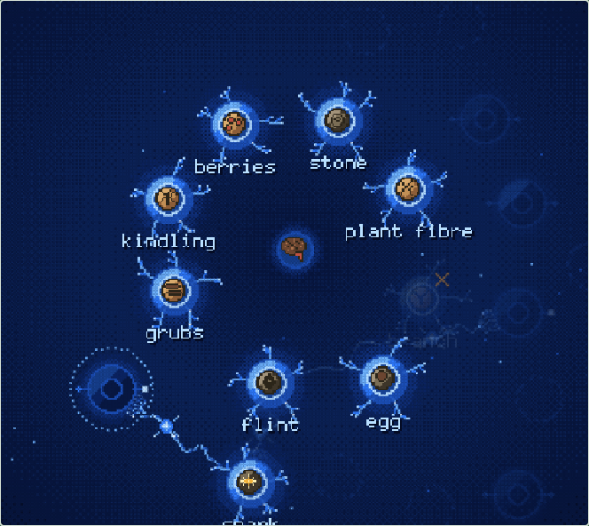

The mind
A discovery is the player's deduction, not the player's chores. The people carry what they have met as neurons in one brain. Round what is known sit dark cells, things that could be found, with no name and no fibres. The player focuses a cell and attaches known neurons to it one fibre at a time: a real parent sticks, anything else withers and tires the mind. When the last socket fills, the most curious person goes and does it.
Source: src/sim/mind/neurons.ts, src/sim/mind/growth.ts, src/sim/mind/mind.ts, src/sim/people/people.ts, src/ui/MindPanel.tsx, src/ui/mindArt.ts, src/pixel/ui/neurons.ts
1Neurons are earned by living
A neuron is something the group has met. Seeing a flint lying within 7 tiles (NOTICE_TILES) or holding it lights flint, and nothing is in the mind that the world did not put there. There are things (flint, stone, kindling, branch, each tied to an ItemType) and happenings (spark, ember, flame and the rest, results that nobody can pick up). Knowledge belongs to the group (Mind.known, one byte per neuron): the first person to meet or work something out gets a ! over their head, and from then on everyone has it. The player sees one brain and never has to ask who knows what.
| neuron | kind | how it is earned |
|---|---|---|
| flint | thing | seen lying within 7 tiles, or held |
| stone | thing | seen lying within 7 tiles, or held |
| kindling | thing | seen lying within 7 tiles, or held |
| branch | thing | seen lying within 7 tiles, or held |
| spark | happening | flint + flint |
| ember | happening | spark + kindling |
| flame | happening | ember + branch, or a burning branch seen |
| sharp edge | happening | flint + stone |
| plant fibre | thing | seen lying within 7 tiles, or held |
| binding | happening | branch + plant fibre |
| stone tool | happening | sharp edge + binding, or a hand axe seen |
| berries | thing | seen lying within 7 tiles, or held |
| grubs | thing | seen lying within 7 tiles, or held |
| egg | thing | seen lying within 7 tiles, or held |
| cord | thing | plant fibre + plant fibre |
| basket | thing | cord + plant fibre |
| cooked | thing | flame + egg |
| fish | thing | seen lying within 7 tiles, or held |
| rabbit | thing | seen lying within 7 tiles, or held |
| spear | happening | sharp edge + branch |
| snare | happening | cord + branch |
| frame | happening | branch + branch |
| bed | happening | frame + plant fibre |
| shelter | happening | frame + cord |
| hut | happening | shelter + plant fibre |
2The brain grows
A neuron has no place until it needs one, and then it keeps it (sim/mind/growth.ts, Mind.places, saved). A root, a thing met in the world, takes a place 66 pixels from the core in the widest free gap between the roots already there. Every other neuron takes its place when it first shows as a dark cell: 52 pixels further out than the middle of its known parents, with a little jitter from the world's seed, then turned round the core and pushed outward until nothing is closer than 44 pixels, never more than 190 out. There are no rings and no sectors, so two games on one seed grow different brains, and a fibre that crosses from one field into another is part of the picture.
/research grows the same brain in the game's own pixels from any order of discovery, step by step.| parents | result | used up | made | carried out as |
|---|---|---|---|---|
| flint + flint | spark | nothing | nothing | a step of a longer chain |
| spark + kindling | ember | dry kindling | nothing | a step of a longer chain |
| ember + branch | flame | dry kindling, branch | burning branch | order Kindle Campfire |
| flint + stone | sharp edge | nothing | nothing | a step of a longer chain |
| branch + fibre | binding | branch, plant fibre | nothing | a step of a longer chain |
| sharp + binding | stone tool | branch, plant fibre, flint | hand axe | order Knap Hand Axe |
| fibre + fibre | cord | plant fibre | cord | order Twist Cord |
| cord + fibre | basket | plant fibre, cord | basket | order Weave Basket |
| flame + egg | cooked | dry kindling, branch, egg | burning branch, roast | a step of a longer chain |
| branch + branch | frame | nothing | nothing | a step of a longer chain |
| frame + fibre | bed | nothing | nothing | a step of a longer chain |
| frame + cord | shelter | nothing | nothing | a step of a longer chain |
| shelter + fibre | hut | nothing | nothing | a step of a longer chain |
| sharp + branch | spear | nothing | nothing | a step of a longer chain |
| cord + branch | snare | nothing | nothing | a step of a longer chain |
The first success of flame is the fire milestone and sets hasDiscoveredFire, the first stone tool sets hasDiscoveredFlintKnapping, so the world opens through what the people worked out and not through a button. Proven, a chain becomes an order: Kindle Campfire plans a campfire (Blueprint.Kindle) and Knap Hand Axe is worked at a knapping floor, which only appears among the buildings once the stone tool is proven.
3Dark cells
A recipe whose result nobody knows sits in the brain as a dark cell once someone knows at least one of its parents (stepOf): a glimmer with one parent known, a shape with more, and a slow heartbeat once every parent is known by someone. Round its body are empty sockets, one for each parent, which give the count and nothing about which. A cell never shows a name, an icon or its fibres, and hovering a neuron never lights it. When a cell first beats the brain button says a new idea is forming, and a click opens the brain focused on it.
4Working on a cell
A click on a cell focuses it: the brain dims, and the known neurons that could still feed it stay lit, while those that already withered on it are crossed off. The player drags from a known neuron to the cell, a fibre growing behind the pointer, and lets go on it (attach). A real parent fills a socket and stays (Cell.attached, saved). Anything else withers on the spot (Cell.withered), and costs the group WITHER_COST 0.2 of its curiosity. Weariness comes back at WEARY_RECOVERY 0.012 a second times the group's comfort, and while nobody's curiosity is over 0.12 no fibre can be drawn and nobody tries anything.
- WholeThe last socket fills and the cell becomes work for the group. It cannot fail now: the guessing was the attaching.
- WhoAnyone free with no critical need and enough curiosity. The most curious takes it.
- FetchThe leaves of the chain are the needs: they carry each item, one at a time, to a work tile. No flint in reach and the cell waits, with the reason in the list.
- TryThey kneel for 3.4 s, striking. What the chain uses up is removed, what it makes is laid down, and the cell lights up.
- LearnThe group learns the result at once, and the person who did it gets the
!.
5Beds and huts
Proving bed adds Bed under Erect on the action wheel and proving hut adds Hut. Each is a plan like the campfire's: a builder carries the materials to the tile (a bed is 2 branches and 3 plant fibre, a hut 5 branches, 1 cord and 4 plant fibre) and the building rises when the last one is down. A bed is a tile a person can step on, a hut is a wall and is slept beside, and either can be taken down again.
A tired person (over 0.6) with a bed or hut within 40 tiles walks to the nearest one nobody else has taken, with or without a fire. Asleep, tiredness falls 1.5 times as fast on a bed and 2.2 times as fast beside a hut (on top of the 3 times of sleeping at all), and the body loses heat at 0.75 and 0.35 of the usual rate. Branches and fibre are no longer only the starter scatter: every 18 s, while fewer than 10 of one lie about, one appears beside a tree or fallen trunk (branch) or beside grass, bush or scrub (fibre) within reach of a person.
6Fish and rabbits
Proving spear (sharp edge + branch) adds Go Fishing / Stop Fishing under Orders, and proving snare (cord + branch) adds Snare under Erect. Both need an ordinary storage for the catch.
An angler walks to the nearest fresh shore, stands 12 s and casts three times; a cast takes one fish from the nearest shoal within 6 tiles (Fish.take, one fish off that shoal's headcount, so the pond really holds fewer) and the fish is carried to a storage. A snare is a building plan of 1 branch and 1 cord. Every 20 s each empty snare catches a rabbit with probability 1 - exp(-0.3 x adults), where adults is the rabbit stock of the 16 tile food-web patch it stands in, and that adult is taken out of the stock (Snares). The rabbit lies on the snare until someone hauls or eats it. Fish (190 kcal) and rabbit (280 kcal) are food like berries, and the Roast Food order roasts them as well as eggs and grubs (a roast is 320 kcal).
7Curiosity
Every person has a curiosity trait rolled from the seed (0.45 to 0.95), which only decides who takes a job. What counts is curiosity x comfort x (1 - weariness), where comfort is 0 if they are hungry or thirsty over 0.8, tired over 0.85 or cold, and otherwise 0.25 plus 0.75 of how fed, watered and rested they are, and weariness is what withered fibres cost the group. A comfortable group researches and a group in trouble survives first, and guessing every neuron in turn is possible but slow. The mind is asked after drinking, eating, sleeping and feeding the fire, so curiosity never beats a need. A tryer who stops is released, and the cell waits RETRY_SECONDS 25 for the next most curious.
8A scripted run
- neurons known
- cells being tried
- weariness x10
9On the screen
A brain button beside the day dial counts the ideas being carried out, glows when a neuron is learned, and carries a new idea is forming beside it when a cell starts to beat. It opens the brain: neurons as coins in dendrite-ringed cells, joins whose pulses run toward their sources, dark cells with their sockets, and Hovering a neuron lights its lineage and dims the rest to 0.16. Under it a list says who is doing what and clicking a line moves the camera there, and the proven recipes. In the world a person carrying an idea has a ? over their head. The same panel is on the zoo's toolbar (the brain), which gives the placed humans a real Mind.
